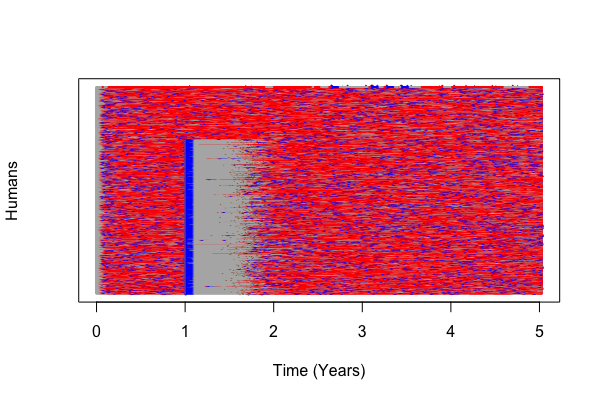

Modular Analysis & Simulation for Human Health

Sean Wu1, Héctor M. Sánchez C.1, Biyonka Liang1, Amit Verma2, Robert C. Reiner, Jr.3, John M. Henry3, Daniel Citron3, David L. Smith3
- University of California, Berkeley
- Emory University, Atlanta, Georgia
- Institute for Health Metrics and Evaluation, Seattle, Washington
- Modeling of mosquito-borne pathogens is particularly complex as infection dynamics arise out of the interaction between (at least) three species: humans, pathogens, and mosquitoes
- MICRO is a process-based description of pathogen transmission through stochastic simulation based on the Gillespie algorithm
M-BITES: Mosquito Bout-based and Individual-based Transmission Ecology Simulation


- While CTDE simulations are necessary for honest simulations of discrete agents interacting on a landscape, continuous approximations are useful for understanding broader system dynamics.
- We developed two deterministc mathematical models of the stochastic process description, called MBITES-DE: an ODE approximation of a cohort of mosquitoes (alternatively, the relative probability for a single mosquito to belong to any behavioral state), and a PDE model which describes the time-dependent and age-dependent evolution of mosquito populations.

-
PfSI: "Enhanced" SIS (Susceptible-Infected-Susceptible) Model
● Infection can provoke malarial fever, leads to treatment-seeking behavior.
● Model of basic drug regimen, PE and GS transmission-blocking vaccines.
- PfMOI: Queuing Model of Superinfection (Multiplicity of Infection)
● Concurrent infections form a G/G/∞ queue.
● Models that do not take into account MOI produce overly optimistic elimination timelines at low transmission. - PfLOME: Individual gametocyte Model of Within-host Dynamics (Lifetime Ontogeny of Malaria Epidemiology)
● Currently developing model of within and between host evolutionary dynamics of Plasmodium falciparum.

- MASH is currently being used to determine optimal timing and spatial deployment of a trial anti-sporozoite vaccine developed by Sanaria Inc. based on non-replicating sporozoites.
- We have run initial simulations as proof-of-concept and are awaiting fine-scaled human movement and ecological data for higher resolution simulations.

- MASH is a family of open-source R packages and C++ executables
- Updating old C++03 code to C++11/C++14 standard
- Refining Bioko Island simulations with better data
- Parameterizing 1200km2, 60,000 human simulation of low-transmission environment in conjunction with researchers from JHU
- More flexible simulation of human movement across scales (neighborhood, city, province, country)